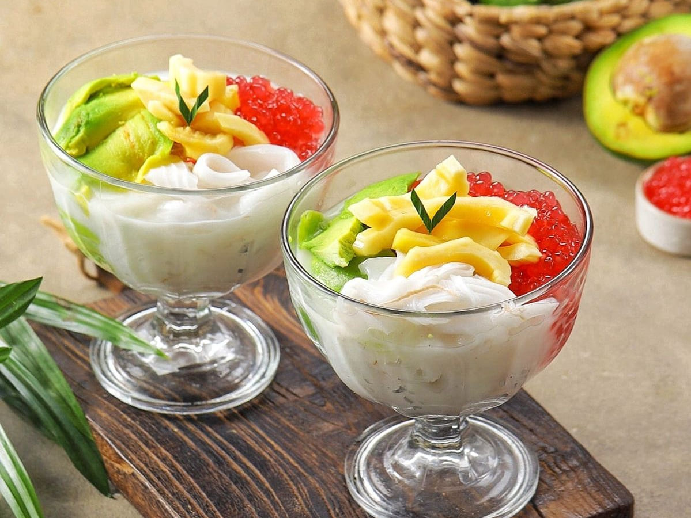

Sejarah Es Teler Enak
Es Teler Enak adalah brand penyedia es teler dan es buah premium sejak tahun 2015. Kami menggunakan bahan-bahan segar dan berkualitas tinggi untuk memberikan pengalaman kuliner yang tak terlupakan bagi pelanggan kami.
Setiap porsi es teler dan es buah kami dibuat dengan resep turun-temurun yang telah disempurnakan selama bertahun-tahun. Kami memastikan setiap sajian menggunakan buah-buahan segar, santan kental yang creamy, dan sirup yang pas manis.
Es Teler Enak juga menawarkan layanan catering untuk acara-acara khusus seperti pesta ulang tahun, pernikahan, arisan, dan acara kantoran. Kami siap memenuhi kebutuhan acara Anda dengan sajian es teler dan es buah yang segar dan lezat.
